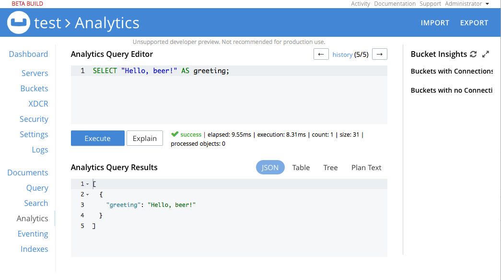

Running Queries
You can run queries using the Analytics Workbench, the command line query tool, cbq, or directly through the REST API.
Using the Analytics Workbench
A custom standalone Analytics Workbench is available with the Developer Preview. Open a browser and go to http://localhost:8095 to access the Analytics Workbench. We recommend Google Chrome or Mozilla Firefox browsers. Note that the DNS name in the URL could be different in the docker setup or the real cluster setup.
Enter the following test query and click Execute:
SELECT "Hello, beer!" AS greeting;

Using the Command Line Query Tool
You can use the command line tool, cbq, to run queries. The cbq is the command line shell for executing queries against Couchbase Server. Analytics contains a special version of cbq that works with the analytics service and can execute multi-line statements.
Run cbq with the following options to specify the host and port for the query service:
$ cbq -e "http://localhost:8095"
Enter the statements in cbq:
cbq> create bucket beerBucket with { "bucket": "beer-sample", "nodes": "127.0.0.1" };
cbq> create shadow dataset beers on beerBucket;
cbq> connect bucket beerBucket with { "password": "" };
Using the REST API
When the cluster is up, requests can be posted to Couchbase Analytics. Access http://localhost:8095/analytics/service that implements the same interface as the Couchbase N1QL query service.
Queries can be requested through the curl command. For example, run query “SELECT 1” through curl:
$ curl -d 'SELECT 1' http://localhost:8095/analytics/service
The request returns:
{
"requestID": "7bd94b03-239b-4909-9907-6bed1130ddfd",
"signature": "*",
"results": [ { "$1": 1 }
]
,
"status": "success",
"metrics": {
"elapsedTime": "24.607400ms",
"executionTime": "24.115200ms",
"resultCount": 1,
"resultSize": 12
}
}
You can also use the REST API to run analytic queries. For details, see Analytics REST API. Here are some examples using curl:
To check the Analytics version, run the following command:
$curl -v http://localhost:8095/analytics/version
To query the configuration parameters, run the following command:
$curl -v http://localhost:8095/analytics/cluster